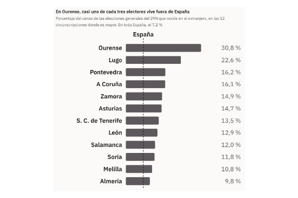

Actualidad · Participación · España
Participación en las elecciones generales del 29N: las encuestas prevén un 73,1 %, 2,7 puntos más que en 2023
Las cuatro veces que la participación subió más de cinco puntos desde 1977, el PSOE quedó primero; las tres que subió poco, el PP. Una relación entre elecciones, con excepciones, no una regla.
Por Nacho G. del Álamo ·
Cada párrafo lleva una etiqueta: dato (cifra comprobable con las fuentes), patrón (relación que se repite, sin afirmar la causa), hipótesis (explicación posible, sin dos fuentes independientes) o contexto (hechos y declaraciones publicados por otros, enlazados). Cómo verificamos
DatoDiez encuestadoras han publicado en las tres últimas semanas una estimación de la participación en las elecciones generales del 29N. La mediana de la última de cada una está en el 73,1 %, 2,7 puntos más que el 70,4 % de los residentes en España que votó en julio de 2023. Ocho de las diez prevén más participación que entonces. La horquilla va del 65,5 % de Celeste-Tel al 77,3 % de Sigma Dos. Es el último día en que se pueden publicar encuestas: desde mañana, martes 24, la ley lo prohíbe hasta el cierre de los colegios.
Ver la tabla
| Encuestadora | Campo hasta el | Participación (%) |
|---|---|---|
| Sigma Dos / El Mundo | 17 nov. | 77,3 |
| IMOP / El Confidencial | 19 nov. | 76 |
| More in Common | 19 nov. | 74,2 |
| Target Point / El Debate | 21 nov. | 74,0 |
| Data10 / Okdiario | 22 nov. | 73,2 |
| Ipsos / La Vanguardia | 20 nov. | 72-74 |
| SocioMétrica / El Español | 15 nov. | 72,6 |
| Sondaxe / La Voz de Galicia | 21 nov. | 71,9 |
| NC Report / La Razón | 20 nov. | 69,5 |
| Celeste-Tel / Onda Cero | 3 nov. | 65,5 |
Lo que pasó otras veces
PatrónEn las 16 elecciones generales desde 1977, la participación de los residentes en España ha subido más de cinco puntos frente a la anterior en cuatro ocasiones: 1982 (+12,6), 1993 (+7,1), 2004 (+7,2) y abril de 2019 (+5,9). Las cuatro veces quedó primero el PSOE. Las tres veces que subió poco, menos de dos puntos (1996, 2015 y 2023), el más votado fue el PP. Cuando bajó, quedaron primeros uno y otro: el PSOE en 1986, 1989, 2008 y nov. 2019; el PP en 2000, 2011 y 2016, y la UCD en 1979.
PatrónLas dos mayores subidas coincidieron con un cambio de gobierno a favor del PSOE. En 1982, la participación llegó al 80,2 %, la más alta de la serie, y el voto al PSOE y a los partidos a su izquierda (la familia del PCE, IU, Podemos y Sumar) subió 11,1 puntos. En 2004 subió 7,2 puntos y ese voto, 7,8. Al revés, las dos mayorías absolutas del PP llegaron con menos participación: en 2000 bajó 8,1 puntos, y en 2011, 3,6; el voto al PSOE y su izquierda cayó 7,8 y 11,3 puntos.
Ver la tabla
| Elección | Votó (%) | Cambio | PSOE e izq. (%) | Primero |
|---|---|---|---|---|
| 1977 | 79,1 | – | 38,9 | UCD |
| 1979 | 67,6 | −11,6 | 41,2 | UCD |
| 1982 | 80,2 | +12,6 | 52,3 | PSOE |
| 1986 | 70,8 | −9,4 | 48,9 | PSOE |
| 1989 | 69,9 | −0,9 | 48,9 | PSOE |
| 1993 | 77,0 | +7,1 | 48,6 | PSOE |
| 1996 | 78,1 | +1,0 | 48,6 | PP |
| 2000 | 70,0 | −8,1 | 40,7 | PP |
| 2004 | 77,2 | +7,2 | 48,5 | PSOE |
| 2008 | 75,4 | −1,9 | 48,0 | PSOE |
| 2011 | 71,7 | −3,6 | 36,7 | PP |
| 2015 | 73,1 | +1,4 | 46,7 | PP |
| 2016 | 69,8 | −3,2 | 44,1 | PP |
| abr. 2019 | 75,8 | +5,9 | 44,0 | PSOE |
| nov. 2019 | 69,9 | −5,9 | 43,6 | PSOE |
| 2023 | 70,4 | +0,5 | 44,4 | PP |
Lo que no dice
ContextoEs una relación entre elecciones, no una ley: son 16 casos y en cada uno pesaron otras cosas. Hay excepciones claras. En 1996 votó el 78,1 %, una de las participaciones más altas, y ganó el PP. En 1993 y en abril de 2019, la participación subió más de cinco puntos y el voto conjunto al PSOE y a su izquierda apenas se movió (−0,3 y −0,1 puntos): el PSOE quedó primero, pero la subida no se tradujo en más voto para ese bloque. Y la previsión de 2,7 puntos de subida para el 29N cae entre los dos grupos: más que las subidas pequeñas de 1996, 2015 y 2023, menos que las cuatro grandes.
ContextoDentro de una misma elección, la relación también aparece entre barrios: en 2023, las secciones que menos votaron dieron más voto al PSOE que al PP, y lo contrario las que más, como se cuenta en la pieza sobre a quién beneficia la abstención. Pero eso no dice quién se quedará en casa el 29N. Las encuestas tampoco miden bien la participación: no todas dicen si cuentan el voto exterior, y la cifra que da Interior la noche electoral es la de los residentes en España, la que se compara aquí. Los avances de las 14.00 y las 18.00, en la guía de horarios de la noche electoral, y el mapa de quién no votó en 2023, en la abstención como si fuera un partido.
Preguntas frecuentes
¿Qué participación prevén las encuestas para las elecciones generales del 29N?
La mediana de las 10 encuestadoras que la publican, en sus últimas entregas, es del 73,1 %, con una horquilla del 65,5 al 77,3 %. En 2023 votó el 70,4 % de los residentes en España.
¿A quién beneficia una participación alta?
En las generales desde 1977, las cuatro veces que la participación subió más de cinco puntos quedó primero el PSOE, y las tres que subió poco, el PP. Es una relación entre elecciones, no una regla: en 1996, con un 78,1 %, ganó el PP.
¿Cuál ha sido la participación más alta en unas elecciones generales?
La de 1982: votó el 80,2 % de los residentes en España. La más baja, la de 1979, con el 67,6 %.
¿Qué participación hubo en las elecciones generales de 2023?
El 70,4 % de los electores residentes en España, sin contar el voto exterior.
A quién beneficia la abstención · El mapa de la abstención · La participación desde 1977, provincia a provincia · Encuestas elecciones generales 2026
Método y fuentes
- Qué se compara
- La participación que estiman las encuestas para el 29N (la última estimación de cada encuestadora en las tres últimas semanas) frente a la de 2023, y la participación de los residentes en España en las 16 elecciones generales desde 1977, su cambio frente a la anterior, el partido más votado y el voto al PSOE y a los partidos a su izquierda.
- Límites
- Es una relación entre elecciones, no una relación causal: son 16 casos, con otros factores en cada uno, y hay excepciones (1996). Las encuestas no siempre dicen si su participación incluye el voto exterior; la de 2023 y la serie histórica son de residentes en España, calculadas con los resultados definitivos por municipio de Interior; las que dio Interior la noche electoral pueden diferir en una o dos décimas (en 2015, por ejemplo). Ipsos da una horquilla (72-74 %): se toma el centro. «PSOE y su izquierda» suma el PSOE y la familia del PCE (PCE, IU, Podemos y sus confluencias, Sumar), sin los partidos de ámbito autonómico.
- Cómo se calcula
- Participación: votantes entre censo de residentes en España, sumados de los resultados por municipio de Interior. Voto por partido sobre el voto a candidaturas. Mediana de las encuestas: la última estimación de participación de cada encuestadora con campo terminado desde el 2 de noviembre, en la tabla de Wikipedia (copiada en participacion_encuestas_29n.csv, en la carpeta datos de los scripts). Script: participacion_prevision_29n.py, en actualidad/src/resumenes. Cifras reproducibles con los scripts del expediente de la pieza. Metodología de Actualidad · Metodología del Atlas
- Fuentes
- Wikipedia, Opinion polling for the 2026 Spanish general election, columna «Turnout» (CC BY-SA 4.0, consultada el 23-11-2026)
- El Mundo, Sigma Dos (18-11-2026)
- El Confidencial, IMOP Insights (23-11-2026)
- More in Common, último pulso antes del 29N
- El Debate, Target Point (23-11-2026)
- OKDiario, Data10 (23-11-2026)
- La Vanguardia, Ipsos (22-11-2026)
- El Español, SocioMétrica (15-11-2026)
- La Razón, NC Report (23-11-2026)
- Onda Cero, Celeste-Tel (6-11-2026)
- Ministerio del Interior, resultados de las elecciones generales por municipio (1977-2023)
- Autoría
- Nacho G. del Álamo
- Revisión de datos y texto
- Nacho G. del Álamo, 23 de noviembre de 2026
- Publicado · actualizado
- 23 de noviembre de 2026 · 23 de noviembre de 2026
- Correcciones
- Ninguna.
Serie «Camino al 29N»: 174 piezas
- Voto por correo para las elecciones generales del 29N: el plazo para pedirlo acaba el jueves 19; en 2023, una de cada tres solicitudes llegó en las dos últimas semanas
- Encuestas y debate: tras el cara a cara de 2023, 10 de 14 encuestadoras ampliaron la ventaja del PP; trece días después ganó por 1,4 puntos
- Elecciones generales: una de cada tres secciones cambió de ganador entre 2019 y 2023
- Elecciones generales: las encuestas dan al PSOE entre el 25,5 y el 33,3 %
- Elecciones generales: Vox baja al 17 % en la encuesta diaria de El País
- Encuestas elecciones generales 2026, hoy 18 de noviembre: el PSOE, a dos puntos o menos del PP
- Encuestas elecciones generales 2026, hoy 19 de noviembre: Sondaxe deja al PSOE a 0,7 puntos del PP
- Debate Sánchez Feijóo: hora, dónde verlo y quién gana el cara a cara
- Elecciones generales: el modelo de encuestas da escaño al Frente Amplio en 5 de sus 17 provincias
- Elecciones generales: en Gijón, Vox sacó en 2023 su mejor resultado en Somió, el barrio más rico: 17,0 %
- Encuestas elecciones generales 2026, hoy 20 de noviembre: el PP gana en las cinco, por entre 2,0 y 4,6 puntos
- Veda de encuestas: hasta cuándo se pueden publicar las del 29N
- Cómo votar en las elecciones generales del 29N: horario, qué llevar y cómo saber tu colegio
- A qué hora se sabrán los resultados de las elecciones generales del 29N
- Estás aquíParticipación en las elecciones generales del 29N: las encuestas prevén un 73,1 %, 2,7 puntos más que en 2023
- Encuestas elecciones generales 2026, hoy 23 de noviembre: PP y Vox suman mayoría absoluta en las siete
- Programa electoral de PP, PSOE, Vox y Frente Amplio: qué propone cada uno el 29N
- Getafe-Atlético: en la ciudad del Coliseum, el PSOE pasó de ganar en 112 de las 122 secciones a ganar en 74, y el PP se quedó a 2.182 votos
- El derbi sevillano se juega en barrios del PP: en Nervión, el del Sánchez-Pizjuán, ganó en 37 de 41 secciones; en la ciudad, el PSOE fue primero en 286 de 521
- A una semana del 29N, la mediana de las encuestas da al PP 3,4 puntos de ventaja, 1,2 menos que hace siete días; el lunes 23 es el último día para publicarlas
- Ver las 174 piezas de la serie
Más datos: elecciones generales del 29N de 2026: fecha y escaños por provincia · resultados de las elecciones generales 2026 (29N) y los de 2023 · dónde y cómo votar el 29N: colegio electoral, voto por correo y plazos.
Sigue leyendo
 Encuestas de hoyEncuestas elecciones generales 2026, hoy 23 de noviembre: PP y Vox suman mayoría absoluta en las siete
Encuestas de hoyEncuestas elecciones generales 2026, hoy 23 de noviembre: PP y Vox suman mayoría absoluta en las siete Crónica de la semanaA una semana del 29N, la mediana de las encuestas da al PP 3,4 puntos de ventaja, 1,2 menos que hace siete días; el lunes 23 es el último día para publicarlas
Crónica de la semanaA una semana del 29N, la mediana de las encuestas da al PP 3,4 puntos de ventaja, 1,2 menos que hace siete días; el lunes 23 es el último día para publicarlas Getafe-AtléticoGetafe-Atlético: en la ciudad del Coliseum, el PSOE pasó de ganar en 112 de las 122 secciones a ganar en 74, y el PP se quedó a 2.182 votos
Getafe-AtléticoGetafe-Atlético: en la ciudad del Coliseum, el PSOE pasó de ganar en 112 de las 122 secciones a ganar en 74, y el PP se quedó a 2.182 votos Sevilla-BetisEl derbi sevillano se juega en barrios del PP: en Nervión, el del Sánchez-Pizjuán, ganó en 37 de 41 secciones; en la ciudad, el PSOE fue primero en 286 de 521
Sevilla-BetisEl derbi sevillano se juega en barrios del PP: en Nervión, el del Sánchez-Pizjuán, ganó en 37 de 41 secciones; en la ciudad, el PSOE fue primero en 286 de 521 A qué hora los resultadosA qué hora se sabrán los resultados de las elecciones generales del 29N
A qué hora los resultadosA qué hora se sabrán los resultados de las elecciones generales del 29N
Cómo votarCómo votar en las elecciones generales del 29N: horario, qué llevar y cómo saber tu colegio